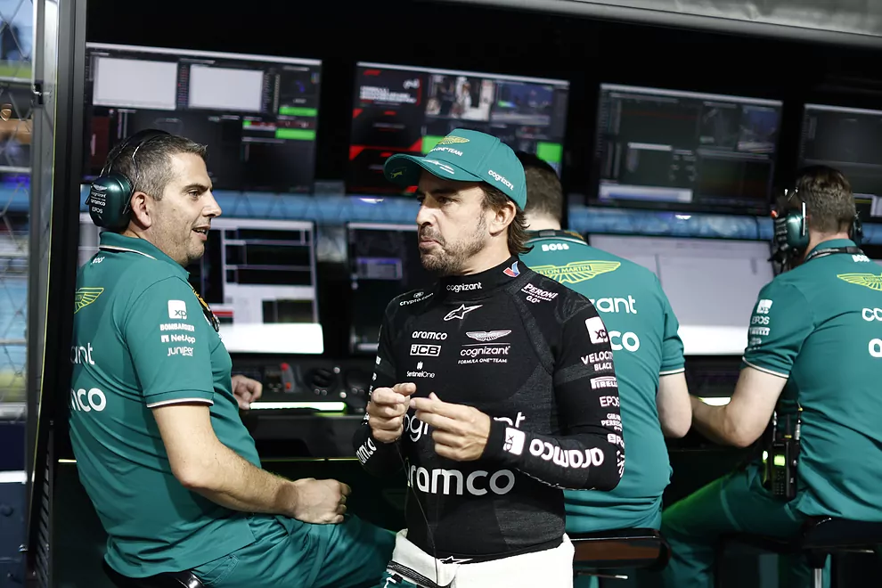

Por primera vez esta temporada, Aston Martin y Fernando Alonso no consiguieron puntuar.Los de Silverstone no encontraron el rendimiento necesario para poder ser competitivos el piloto asturiano, el único al volante del AMR23 en Marina Bay tras el accidente de Stroll en clasificación, completó uno de sus peores domingos. "Fue una noche muy dura: todo lo que podía salir mal nos salió mal", reconoció.
Con todo, de nada vale lamentarse cuando algo ya ha acabado. Así, Mike Krack, jefe de equipo de los británicos, se mostró reflexivo sin llegar a ser alarmista, pero teniendo claro que deben encontrar una solución lo antes posible, para poder remontar en la próxima cita.
"Tenemos que aprender la lección de este fin de semana, sacar lo positivo y pasar a Japón lo antes posible. Hemos tenido un par de fines de semana malos, pero también hemos tenido algunos buenos. Creo que en una temporada de 22 carreras, y en general en el deporte, hay altibajos, es normal", explicó.
Las expectativas del equipo para el GP de Singapur eran altas. El trazado les favorecía, era un circuito de alta carga aerodinámica y eso les ha ido bien este año. Hasta ahora. Las sensaciones no fueron buenas desde el viernes. Alonso avisaba y no descartaba caer en clasificación antes de "Creo que la clasificación va a ser muy apretada: podríamos ser P5, P6, o podríamos salir en la Q2 si pierdes sólo un par de décimas en la vuelta decisiva".
"Creo que Singapur fue un poco una sorpresa para mí pero también para todo el paddock." Mike Krack, jefe de equipo de Aston Martin
Con todo, pudo lograr un séptimo puesto para el domingo, lo máximo que podían conseguir según el propio piloto. "Le he dicho a mi ingeniero que no la habría mejorado ni aunque me hubiese quedado toda la noche intentándolo. La posición es la que es, hay que aceptarla. No estamos tan fuertes como otros equipos", explicó.
Sin entender aún qué fue lo que falló para que no encontrasen el rendimiento previsto, Krack se consoló viendo que el suyo no fue el único equipo que se vio sorprendido al llegar a Singapur. Red Bull también retrocedió, mientras que Ferrari y McLaren se vieron beneficiados. "Creo que Singapur fue un poco una sorpresa para mí pero también para todo el paddock, porque hemos visto un orden completamente diferente, ¿no? Así que creo que es algo que tenemos que entender", apuntó.
Si bien es cierto que el diseño del trazado fue modificado para esta edición, el jefe de equipo de Aston Martin había asegurado que el carácter de la pista "no iba a cambiar mucho", por lo que toca analizar para buscar la respuesta. "Obviamente ha habido un reasfaltado de la pista, y la disposición de las curvas es diferente. Así que hay que entender todo eso. Pero creo que hay algunas cabezas que echan humo, y no sólo en nuestro garaje...", dijo.